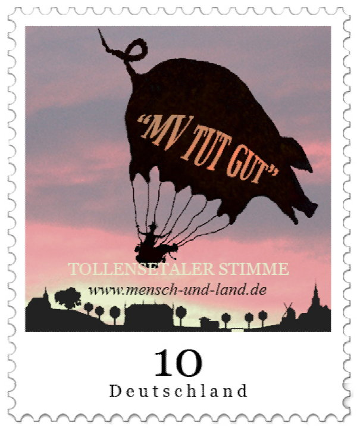
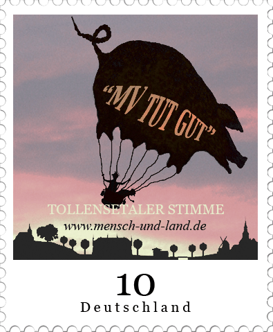

Mensch und Land


Ein unabhängiges Informationsblatt: Landleben - Geschichte und Zukunft einer gefährdeten Kulturform - regionale Umbrüche im Kontext globaler Zusammenhänge des real existierenden Kapitalismus.
Ohne die Verantwortung der Städter für den ländlichen Raum wird jede urbane Perspektive im Desaster enden...→

Wir berichten für Freunde, Bewohner und Gäste des Tollensetals seit August 2009. Damals in Bezug zur modernsten Ferkelfabrik Europas - mit der Kraft der Landesregierung geplant und durchgedrückt für unsere Heimat, dem besten Standort dafür in ganz MV. 2021 verbrannte sie mit ca. 50.000 Schweinen.
2020 waren dort schon mal 1.000 Schweine folgenlos erstickt.
Genehmigt wurde dieses Desaster 2012 unter dem Motto “MV tut gut”.
Das Verwaltungsgericht Greifswald hat die seit damals anhängige Brandschutz-Klage des BUND bis heute nicht abschließend behandelt.
Inzwischen bekommt die Entwicklung des Massentourismus am Tollensetal mit der Broocker Schlossanlage neben der Industrialisierung regenerativer Energien wachsende Bedeutung.
Unser Thema bleibt das Landleben.
Ohne die Verantwortung der Städter für den ländlichen Raum wird jede urbane Perspektive im Desaster enden...→
Wir berichten für Freunde, Bewohner und Gäste des Tollensetals seit August 2009. Damals in Bezug zur modernsten Ferkelfabrik Europas - mit der Kraft der Landesregierung geplant und durchgedrückt für unsere Heimat, dem besten Standort dafür in ganz MV. 2021 verbrannte sie mit ca. 50.000 Schweinen.
2020 waren dort schon mal 1.000 Schweine folgenlos erstickt.
Genehmigt wurde dieses Desaster 2012 unter dem Motto “MV tut gut”.
Das Verwaltungsgericht Greifswald hat die seit damals anhängige Brandschutz-Klage des BUND bis heute nicht abschließend behandelt.
Inzwischen bekommt die Entwicklung des Massentourismus am Tollensetal mit der Broocker Schlossanlage neben der Industrialisierung regenerativer Energien wachsende Bedeutung.
Unser Thema bleibt das Landleben.
Alle 76 Ausgaben der Tollensetaler Stimme im Archiv ansehen →